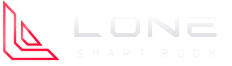
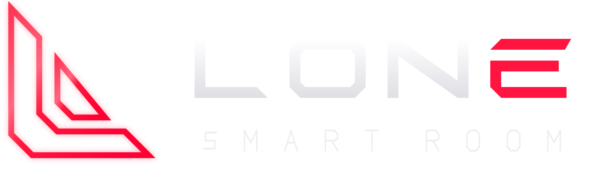
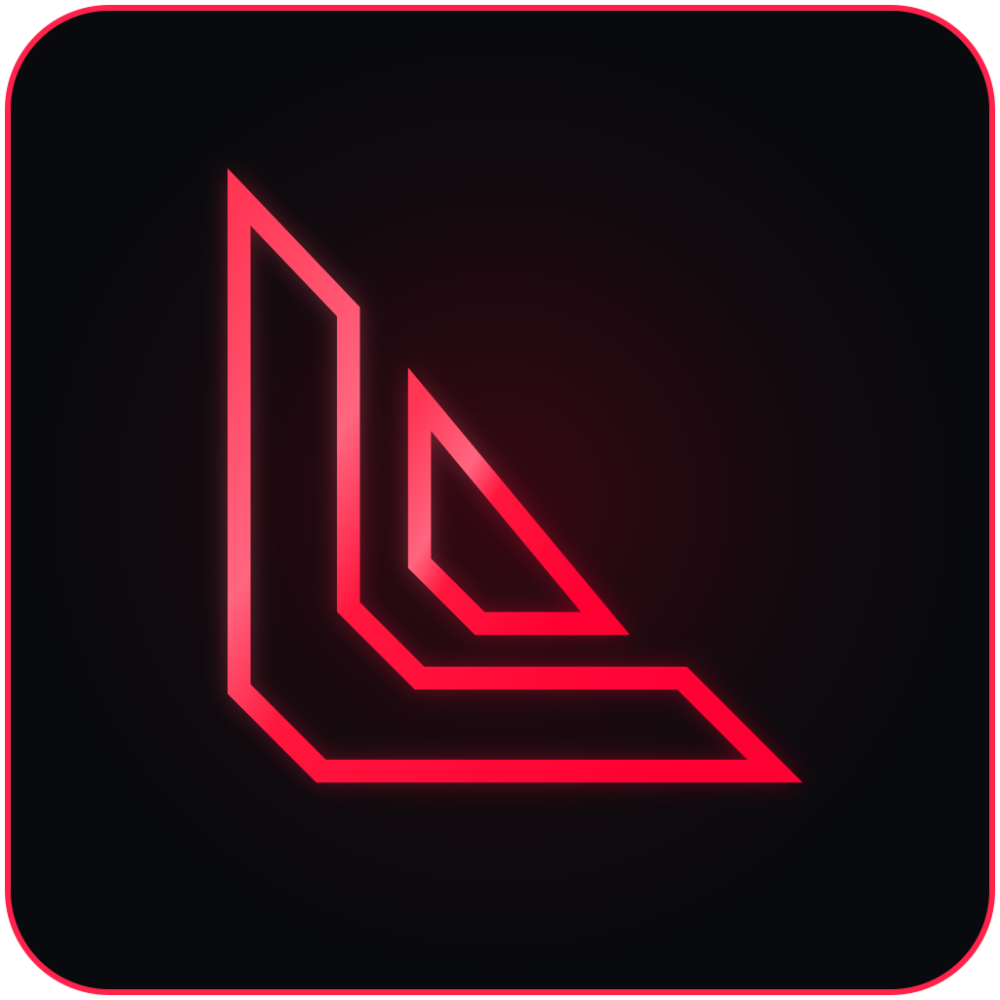
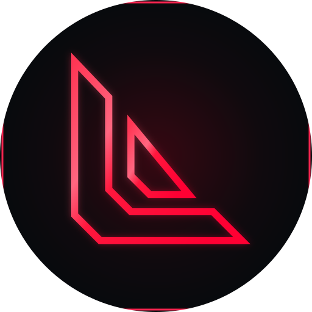
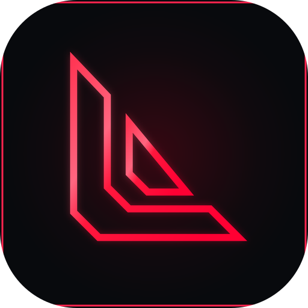

Logomarca anterior

Proposta: L O N brancos · E vermelho

Windows original → fonte Android idêntica
 Windows · original intacto
Windows · original intacto
Android · cópia exata do mesmo PNGMáscaras do launcher Android

Circular · moldura original recortável
Arredondada · símbolo preservado